TKK Abdi
Siswa Aries
ABOUT
This website contains a collection of portfolios from our members, including their projects, achievements, experiences, and skills.
It provides an overview of each member’s work and activities.
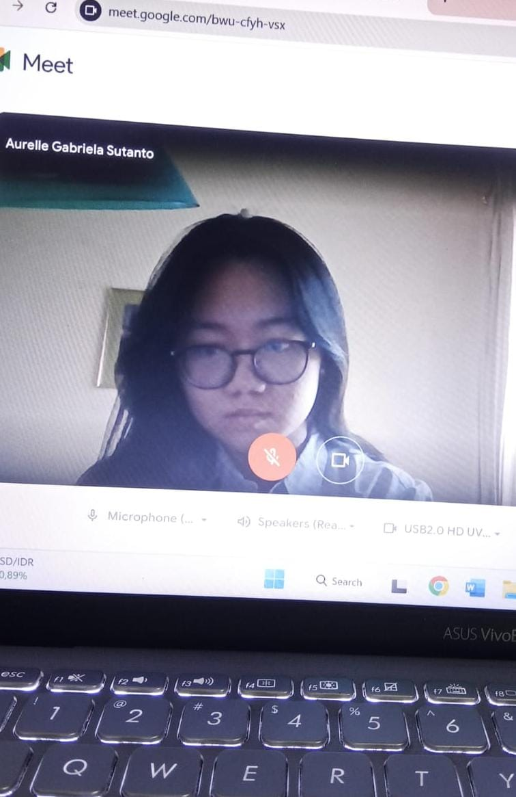
Hello, I'm
Aurelle Gabriela
Sutanto
Saya adalah pribadi yang detail-oriented, bertanggung jawab, dan berkomitmen untuk memberikan hasil kerja yang maksimal. Saya senang bekerja secara terstruktur, cepat belajar, dan selalu berusaha meningkatkan kualitas dari setiap tugas yang saya kerjakan.
Education
SDS Abdi
Siswa Aries
SMPS Sang
Timur Jakarta
SMAS Sang
Timur Jakarta
Organization
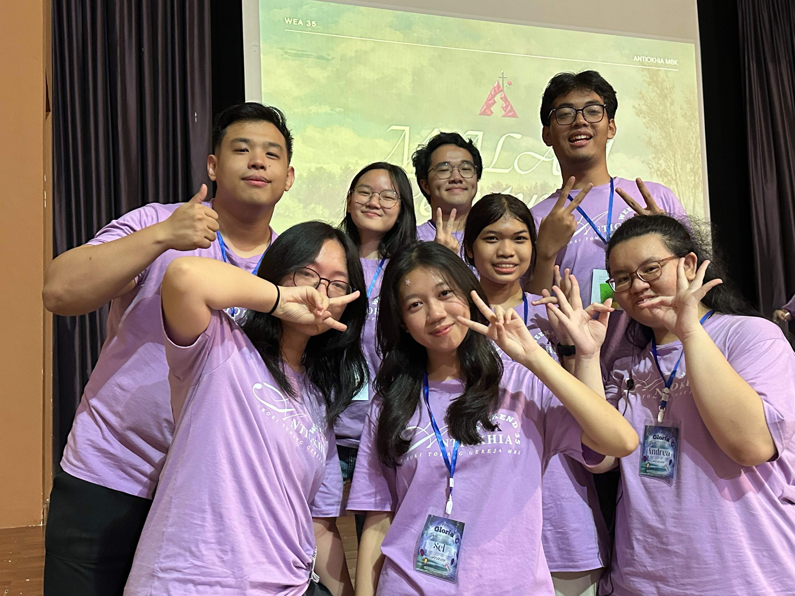
Antiohk (2025-Sekarang)
• Divisi Acara
• Divisi ATK (Akomodasi, Transportasi, Konsumsi)
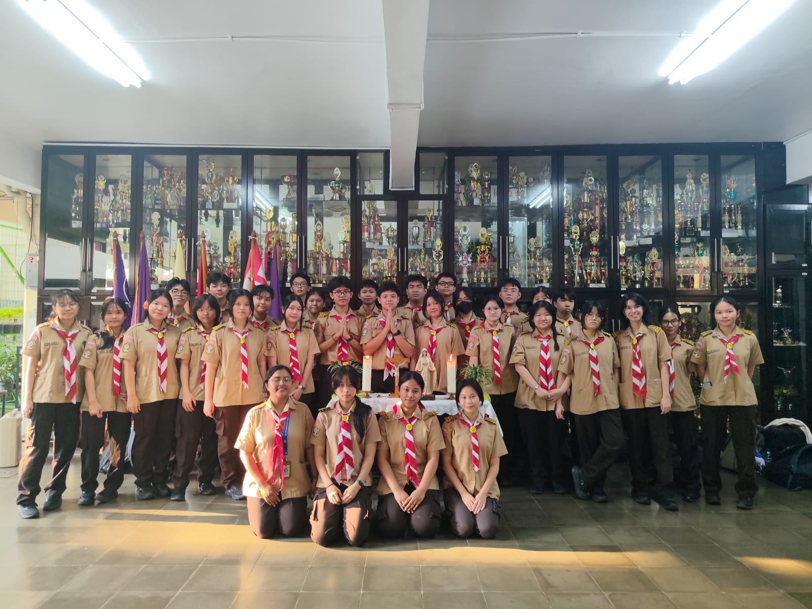
Dewan Ambalan (2025-2026)
Achievements
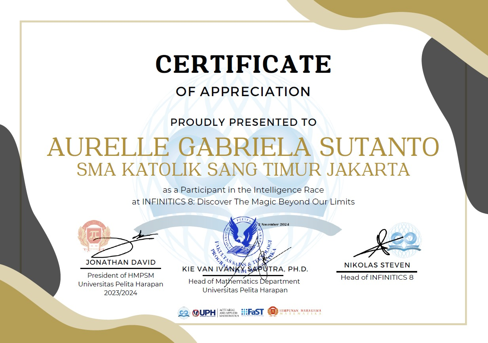
INFINITICS 8 UPHCollege - Semifinalist
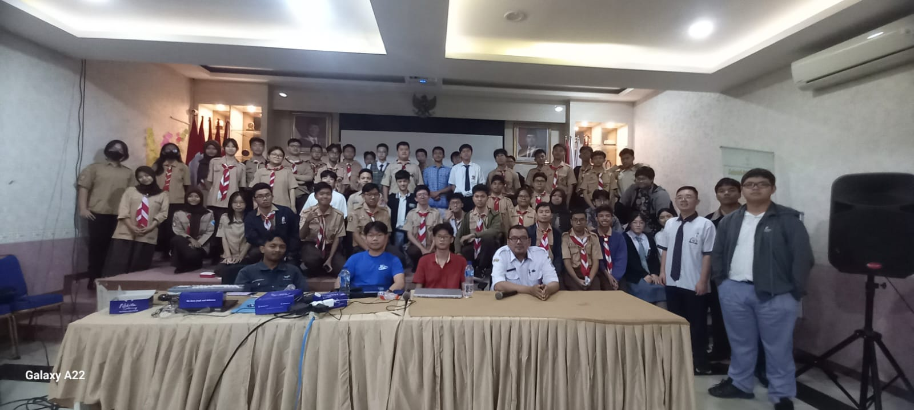
Peserta OSN-P 2026Bidang Informatika
About me
Haihai semuanya!! Aku Brigitta. Aku orangnya kreatif, cukup analitik, dan mampu kerja sama dalam tim. Aku senang bertukar ide, berdiskusi, dan mencari solusi dari berbagai sudut pandang. Selain itu, aku juga cukup fleksibel, mudah beradaptasi, dan excited buat mencoba hal-hal baru. Kalau lagi mengerjakan sesuatu, aku berusaha tetap teliti dan bertanggung jawab, tapi tetap enjoy sama prosesnya. Dari berbagai pengalaman yang ada, aku ingin terus belajar, berkembang, dan menuangkan ide-ide kreatif menjadi sesuatu yang menarik.
.png)
.png)
.png)
Education
Background
SDK ABDI SISWA
SMPK SANG TIMUR JAKARTA
SMAK SANG TIMUR JAKARTA
Organization Experience
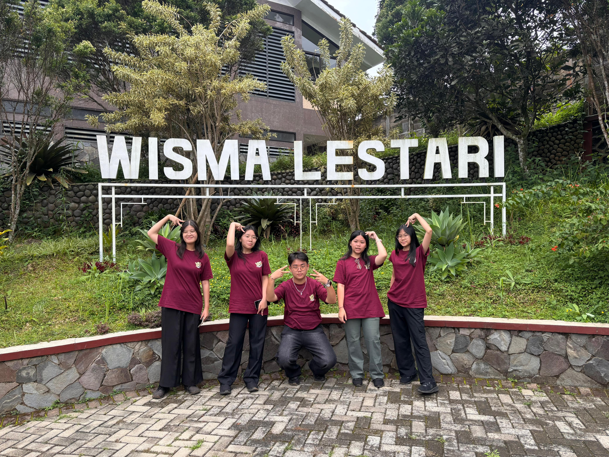
• MPK 2025–2026
Komisi 2: Humas, Seni, Wira usaha
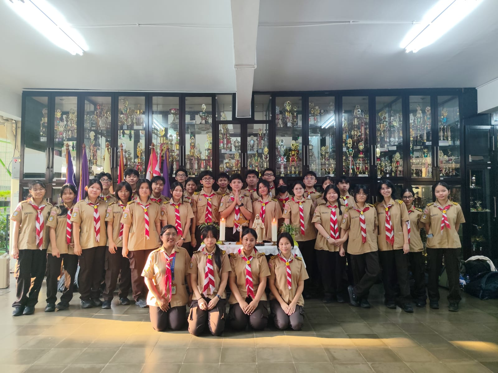
• Dewan Ambalan 2025–2026
Teknik Pramuka
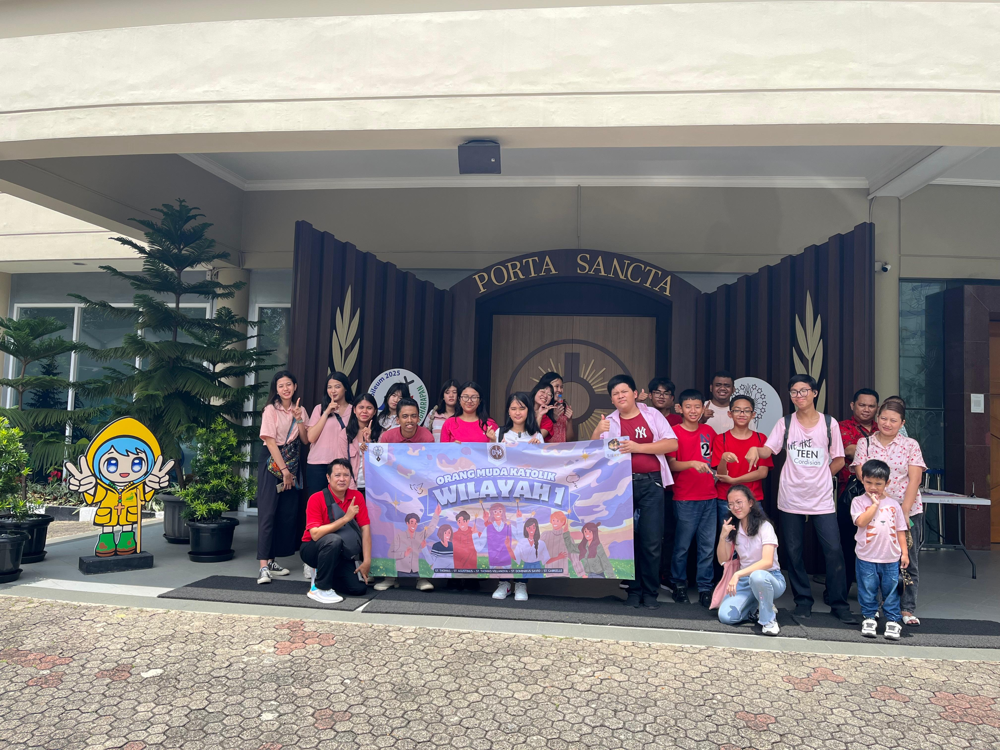
• OMK Wilayah 1 MBK 2024–sekarang
.png)
.png)

Skills &
Expertise
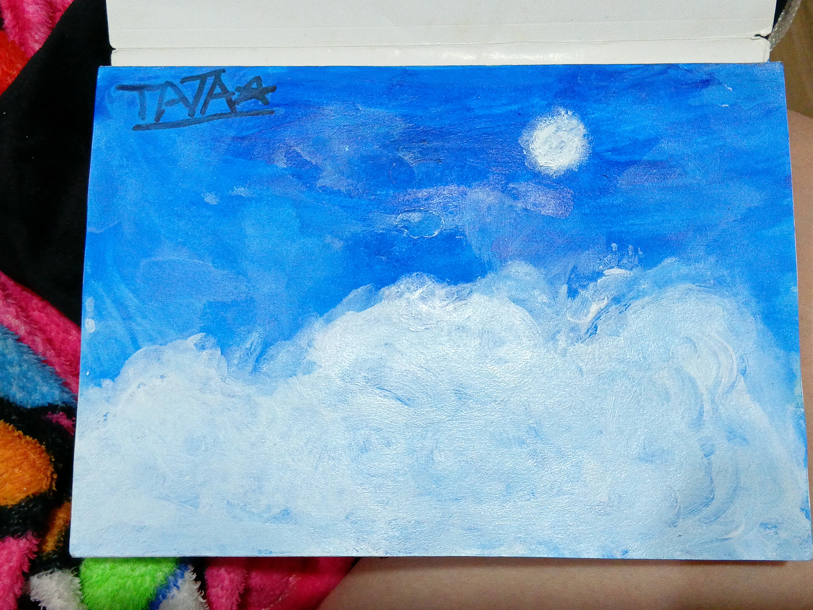
Arts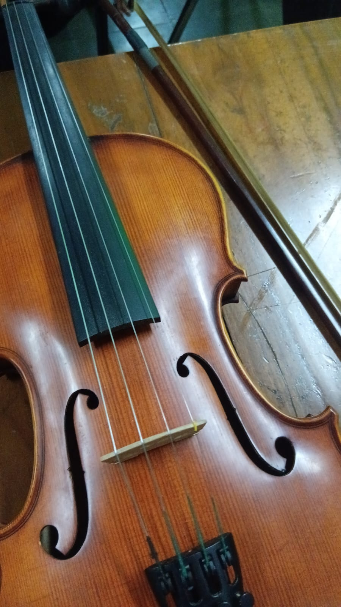
Music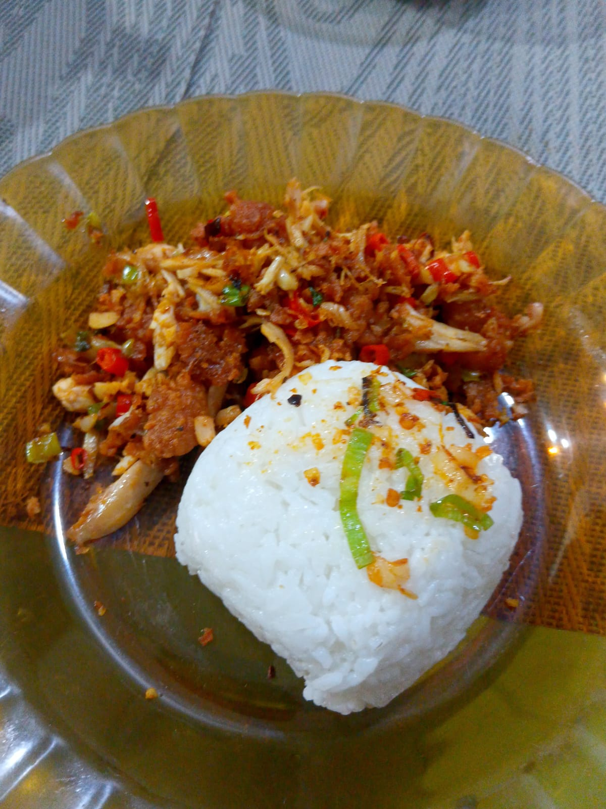
Cooking.png)
.png)

Contact Info
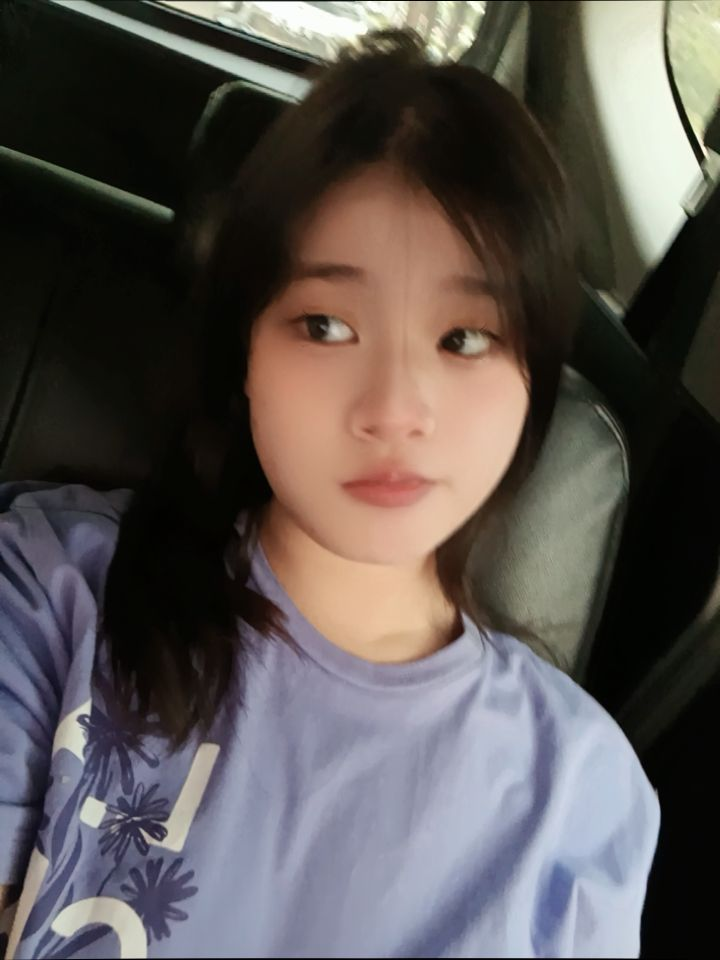
+081295379153
brigittacarissatjia@gmail.com
@brigittacarissa_tjia
.png)
.png)
.png)
Hello, I'm
Clarissa Haryadi
.png)

About Me
I am a curious, independent, and versatile person who enjoys learning, exploring new interests, and understanding how things work. I tend to approach things analytically, paying attention to details and looking for connections rather than simply accepting information at face value.
My interests range from analytical and creative activities to hands-on experiences and sports. I enjoy challenges that require problem-solving, observation, adaptability, and persistence, while also appreciating opportunities to build, experiment, and learn through experience.
I value continuous growth and prefer developing my abilities through exploration and practice. I am always open to discovering new interests, taking on unfamiliar challenges, and finding different ways to improve myself.
Education & Skills
Education
- PG Sang Timur Jakarta
- TKK Sang Timur Jakarta
- SDK Sang Timur Jakarta
- SMPK Sang Timur Jakarta
- SMAK Sang Timur Jakarta
Skills
Personal Skills
Organization Experience
Girls Basketball Team (2018 - 2026)
Sang Timur Jakarta
- Grade 4-6, Main Team [No Specific Role]
- Grade 7-9, Main Team [Small Forward (SF) / Shooting Guard (SG)]
- Grade 10-12, Main Team [Small Forward (SF)]
Venture Scout Council (2025 - 2026)
SMAK Sang Timur Jakarta
- Operations and Activities Committee
Antiokhia (2025 - Now)
Gereja Maria Bunda Karmel
- Documentation Section
- Equipment Section
- Transport, Accomodation, and Food Section
Let's Work Together ✦
✉ clarissa.haryadi09@gmail.com
◉ @clar_ralc (Instagram)
☎ +62 811-883-1689
⌖ West Jakarta, Indonesia
Organization Experience
Venture Scout Council
.jpeg)
Basketball Team
.jpeg)
Antiokhia
.jpeg)

HI!!
Aku Claudya Verena Oei, siswa SMAK Sang Timur Jakarta yang berorientasi pada detail dan berpengalaman dalam mengelola acara sekolah skala sedang hingga besar. Terbiasa memegang tanggung jawab di bidang Ketua Pelaksana dan Divisi Acara dengan fokus pada manajemen alur acara dan koordinasi tim.


Education
SMA Katolik Sang Timur Jakarta
High School Diploma in Science Stream | 2024 – Present
• Relevant Coursework: Advanced Mathematics, Physics, Chemistry, Computer Science, Economy
• Current GPA/Average Score: 88.29/100
• Key Achievements: Vice President of Youth Red Cross, Female Scout Leader.


Organization Experience

MPK SMA Sang Timur
Anggota Komisi III (Upacara serta Olahraga dan Kesehatan)

Pembina Sekolah Minggu
Pengajar Didik Iman Anak periode 2025-2028

Dewan Ambalan Pramuka
Pradani periode 2025-2026

PMR SMAK Sang Timur
Wakil Ketua ekstrakurikuler PMR
Personal Skills
Adaptability
Critical Thinking
Attention to Detail
Creativity
Team Work
Analytical Thinking
Systematic Thinking
Time Management


Contact Info
G claudyaverenaoei@gmail.com
◉ +62 811-3563-422
◎ @cloudvoei
.png)
.png)
.png)
.png)